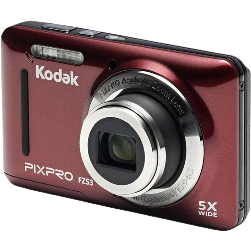
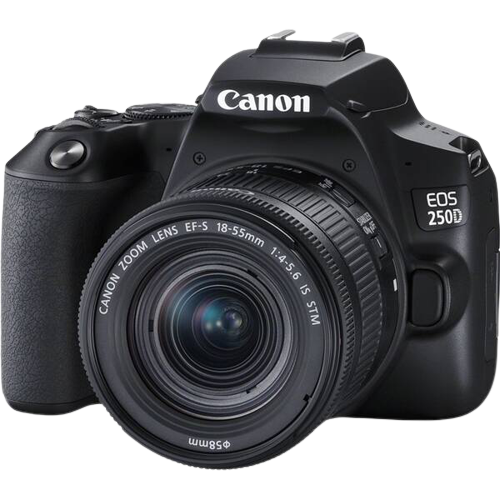

Kodi
.png)
Digitálny fotoaparát Kodak Friendly Zoom FZ53 (819900012446) červený2 recenzie
Všetko o produkte:
S modelom Kodak FZ53 z rodiny Friendly Zoom sme sa zamerali na moderný, účelný a štíhly dizajn, ktorý je možné ľahko ovládať. Spolu s dobíjacou Li-ion batériou s dlhou výdržou, českým menu, 28mm širokouhlým objektívom, 5x optickým zoomom a 16Mpx snímačom umožňujúcim nahrávať kvalitné HD video, je Kodak FZ53 tým pravým spoločníkom na každodenné nosenie aj poriadny výlet.
digitálny kompakt • 16Mpx snímač CCD • objektív PIXPRO Aspheric Zoom Lens • 5× optický zoom • 6× digitálny zoom • HD video (1280×720p) • micro USB • slot na kartu SSDHC • 2,7'' displej • integrovaný blesk • makro režim • face detection • redukcia červených očí • samospúšť • hmotnosť 106 g • rozmery 9,15 × 5,65 × 2,26 cm
Naša cena s DPH: 105.00 €
Digitálny fotoaparát Olympus TG-6 červený
Všetko o produkte:
Tough TG-6 je vlajková loď Olympusu v kategórii skutočne odolných kompaktov Tough. Nemusíte sa s ním obávať extrémnych podmienok vrátane používania pod vodou, pádov z výšok alebo drviaceho tlaku, a napriek tomu zaobstaráte dokonalé snímky plné detailov a perfektne ostré.
outdoorový kompaktný fotoaparát • 12 Mpx CMOS snímač • objektív so svetelnosťou F2 a 4× optickým zoomom • 4K videá • obrazový procesor TruePic VIII • podvodné režimy • Wi-Fi • GPS • micro USB • micro HDMI • 3" LCD displej • extrémna odolnosť
Naša cena s DPH: 419.00 €
Digitálny fotoaparát Canon EOS RP telo + adaptér čierny
Všetko o produkte:
Canon EOS RP je CSC fotoaparát, ktorý úspešne spája výkon plnoformátového bezzrkadlového fotoaparátu a kompaktného tela radu EOS R. S týmto pomocníkom posuniete fotografické zručnosti na úplne novú úroveň. Svedčí o tom okrem iného aj to, že sľubuje najrýchlejšie automatické zaostrovanie na svete s rýchlosťou len 0,05 sekundy.
digitálna bezzrkadlovka • 26,2 MPx Full-Frame snímač CMOS • procesor DIGIC 8 • ostriaca technológia Dual Pixel CMOS AF • ISO až 40 000 (rozšíriteľné až na 102 400) • až 4K video • digitálna stabilizácia Movie Digital IS • Wi-Fi • Bluetooth • 3" dotykový otočný displej • pamäťové karty SD • EF-EOS R adaptér v balení • rozmery 132,5 × 85 × 70 mm • hmotnosť 485 g
Naša cena s DPH: 1 049.00 €
Digitálny fotoaparát Fujifilm XP140 modrý
Všetko o produkte:
Vyrážate často v ústrety adrenalínovým dobrodružstvám? V tom prípade je pre vás digitálny fotoaparát FujiFilm XP140 ako stvorený. Jeho prostredníctvom totiž v perfektnej kvalite zachytíte všetky svoje zážitky.
digitálny kompaktný fotoaparát • 16,4 Mpx snímač BSI-CMOS • video 4K Ultra HD/15 fps • 5× optický zoom (28 - 140 mm) • svetelnosť od f/3,9 • optická stabilizácia • citlivosť ISO až 12 800 • 3" LCD displej • detekcia očí • samospúšť Face Auto Shutter a Smile Shutter • odolnosť voči mrazu, pádu z výšky do 1,8 m, prachu a vode do 25 m (IP68) • Wi-Fi • Bluetooth
Naša cena s DPH: 149.00 €
Digitálny fotoaparát Canon EOS 250D + 18-55 IS STM (3454C002) čierny
Všetko o produkte:
EOS 250D od Canonu je kompaktná a napriek tomu funkciami nabitá zrkadlovka, ktorá dosahuje výborné výsledky zásluhou 24,1-megapixelového APS-C snímača a obrazového procesora DIGIC 8. Výsledkom sú dokonale ostré a prekreslené fotografie a tiež videá nakrúcané až do 4K rozlíšenia, na čom má veľký podiel aj technológia Dual Pixel CMOS AF.
set digitálnej zrkadlovky a objektívu • 24,1 MPx APS-C CMOS snímač • objektív EF-S 18–55 IS STM so svetelnosťou f/4.0–5.6 • procesor DIGIC 8 • 4K (Ultra HD) video • ostrenie Dual Pixel CMOS AF • optický hľadáčik • 3,0" dotykový otočný displej Clear View II • ISO 100–51 200 • integrovaný blesk • sériové snímanie 5 sn./s • podpora formátu RAW • režim Kreatívny asistent • Wi-Fi • Bluetooth • mini HDMI • SD/SDHC/SDXC slot • rozmery 122,4 × 92,6 × 69,8 mm • hmotnosť 450 g